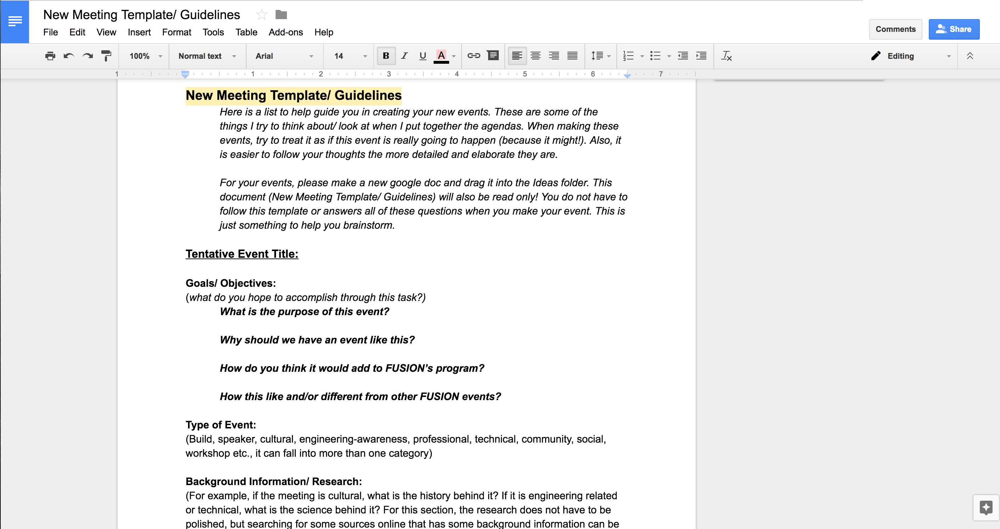

I conducted two week long observation studies at two different on-site locations and assisted in the preparation of these studies. Since I participated in two observation studies, I was able to compare and contrast the differences between the two companies since the studies had the same "template." From this experience, I received my first glimpse into how design research in industry works and saw how my seniors interacted with clients. I also saw how deliverables came together. I learned the most from the observation studies as it helped me begin to think about things I don't normally think about. We usually think people spend a lot of time at their desks, but research showed that they may spend a lot of time in small group meetings at other people's desks.
Experience
Pieces of My Resume
Internship
Roles
Internship/ Observation Studies
As a consulting student intern at HOK, I worked under a more senior team member to conduct research, organize materials, support project findings, maintain project files, and produce reports. I helped conduct project research such as info on clients and assisted in putting together Consulting deliverables. I collected space utilization information from AutoCad drawings. And I processed quantitative and qualitative information from clients (such as surveys).
FUSION

Every presidency is different and my main goal as president was to improve the organizational structure of the club. This was mainly through working together with board members to gauge what we wanted for the club and define strong clear goals of what we wanted this club to become for the year. At the beginning of the year, we drew out who might join fusion and thought about our own reasons for joining.
I also wanted to push for new ideas. One of the ways, I did this was by preparing materials and templates such as the image seen above. This was so board members would be better prepared for our meeting agendas and to increase board participation during meetings. It was important that all ideas were heard and that new ideas were welcomed. Even if I set an agenda template, each board member had a part where they were in charge. Throughout the year, we were able to introduce new successes such as weekly tech updates, an event that introduced engineering majors, increasing activities with other on campus clubs, as well as improving older events.
Throughout the year, we evaluated the pros, cons and improvements for every event. If it was an event we already did, I pulled out the pros, cons, and improvements from the previous year, so we could build upon it.